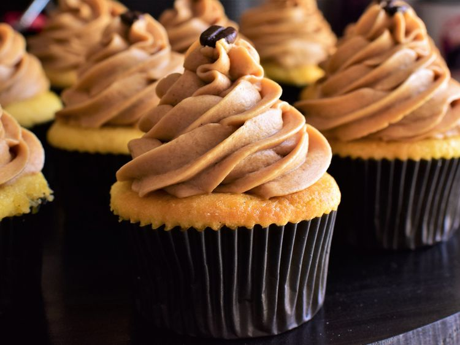

Vanilla Bean Cupcakes with Espresso Frosting

Pairing a rich, vanilla-laden cupcake with a silky espresso frosting results in a confection that tastes like a vanilla latte in dessert form.
ingredients
Vanilla Bean Cupcakes:
- 2 cups all-purpose flour
- 2 teaspoons baking powder
- 3/4 teaspoon salt
- 1/8 teaspoon ground nutmeg
- 1 1/4 cups white sugar
- 3/4 cup unsalted butter, softened
- 3 large egg yolks, at room temperature
- 2 large eggs, at room temperature
- 2 teaspoons vanilla extract
- 1/4 teaspoon almond extract
- 1 (7-inch) vanilla bean
- 1 1/4 cups buttermilk, at room temperature
Espresso Frosting:
- 2/3 cup heavy cream
- 3 tablespoons espresso
- 1 teaspoon vanilla extract
- 1/4 teaspoon salt
- 1 1/2 cups unsalted butter, at room temperature
- 6 cups confectioners sugar
Directions
- Preheat the oven to 350 degrees F 175 degrees C). Line two cupcake pans with liners.
- Whisk together flour, baking powder, salt, and nutmeg in a bowl until combined.
- In a large bowl, cream together sugar and 3/4 cup butter until light and fluffy, about 3 minutes. Add in egg yolks, and beat until combined. Add in whole eggs, 1 at a time, beating well after each addition. Turn mixer speed up to medium-high, and beat until mixture is fluffy and has lightened in color, 4 to 5 minutes. Mix in vanilla and almond extracts.
- Slice vanilla bean in half lengthwise. Use the back of a knife to scrape out seeds from each half and add to the butter mixture. Set vanilla bean pod aside to use for the frosting. Mix vanilla bean seeds into the butter mixture on low speed until incorporated.
- Add 1/2 of the dry ingredients to butter mixture, and mix until just combined. Pour in buttermilk, and mix until just combined. Add in remaining flour mixture and mix until just combined. Divide batter evenly between the 2 prepared cupcake pans.
- Bake in the preheated oven, 1 pan at a time, until cupcakes spring back lightly when touched and a toothpick inserted near the center comes out clean, 25 to 30 minutes. Allow cupcakes to cool in the pan for several minutes before removing to a wire rack to cool completely.
- Meanwhile, begin the frosting. Place heavy cream and reserved vanilla bean pod into a small saucepan over low heat. Bring cream just barely to a simmer, then remove from heat. Allow to sit at room temp for about 5 minutes before pouring cream and vanilla bean pod into a small bowl or glass measuring cup. Cover, then refrigerate until chilled, about 30 minutes.
- Remove heavy cream from the fridge, then remove and discard vanilla bean pod. Add espresso powder, vanilla extract, and salt to cream, and mix until espresso powder is completely dissolved. Set mixture aside.
- In a large bowl, cream 1 1/2 cups butter until light and fluffy, 1 to 2 minutes. Add in powdered sugar, 1 cup at a time, mixing well after each addition. With the mixer running on low, slowly pour in the heavy cream mixture a little at a time. Once incorporated, turn the mixer speed up to medium-high and beat for about 2 minutes or until light and fluffy. Frost cupcakes as desired with frosting.
principal page